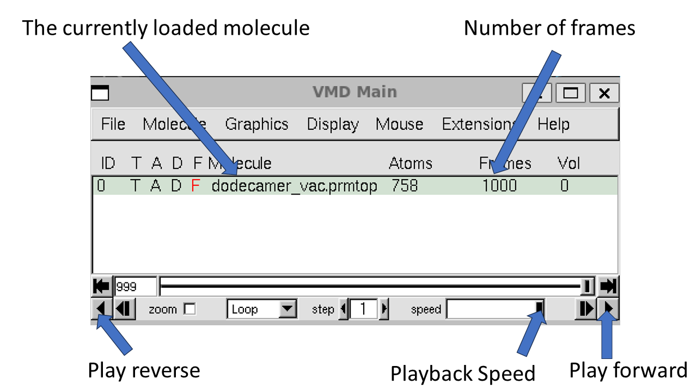
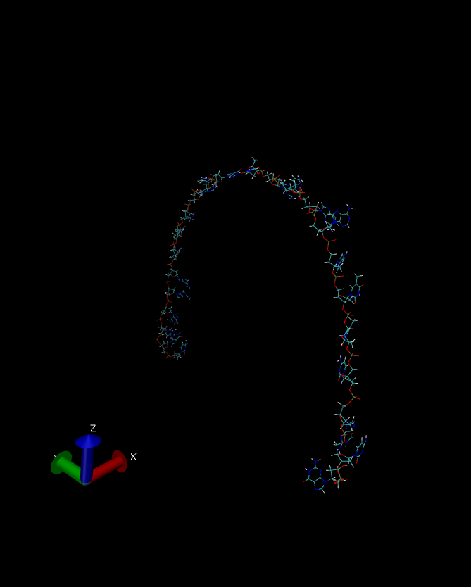

Visualizing the trajectories with VMD¶
One commonly used visualization program is called Visual Molecular Dynamics. You can download and install VMD from the provided link.
Once VMD is installed, you can open it by typing vmd in to your terminal.
In the main window that pops up, click File -> New Molecule. This will open a window called “Molecule File Browser”.
VMD supports multiple trajectory files for a single molecule.
Thus a molecule is defined by loading the associated prmtop file.
So, start by selecting Browse and finding the dodecamer_vac.prmtop file.
Then under the heading where it states “Determine file type:” select AMBER7 Parm.
Note: VMD will likely select this by default when you load the file.
Then hit ‘Load’.
Next we need to choose which trajectory to load.
Make sure that dodecamer_vac.prmtop is selected in the “Load files for”.
In this case, we will load the 12 angstrom cutoff trajectory file dodecamer_md1_12Acut.nc.
Select Browse, browse for the file.
Once you have found the file, load it and the file type should be determined automatically.
The file type should be NetCDF (AMBER, MMTK).
When you hit “Load” again you should see all of the frames loaded into the main molecule window. 1,000 frames in total.
We can now use the playback tools in the “VMD main” control panel to play our movie:
You should have a go at playing the video of the trajectory. Note that you can rotate the view in the VMD Display window by clicking and dragging. You can Zoom in by scrolling or using your mouse wheel. As you watch the animation, notice how the DNA holds its secondary structure. Though there is considerable movement in the extremities, the overall structure is preserved.
Is this the correct answer though? A stable trajectory doesn’t necessarily mean it is correct. Is a strand of charged DNA in vacuum really likely to be stable? In solvent, such electrostatic repulsions are shielded by the solvent but in vacuum, there is no such shielding and there are no external forces to help hold the chains together. Lets take a look at the trajectory obtained from our no cutoff simulation:
If VMD is already open, close it - or if you know how, simply delete the existing molecule.
Repeat the process as described above.
Use the same dodecamer_vac.prmtop file but this time select the no cut off trajectory file dodecamer_vac_md1_nocut.nc.
This time when you hit “Load” VMD should load the trajectory up until the point where the simulation crashed (380 frames of 0.1ps each = 38.0 ps).
Have a look at the trajectory, the difference from the last simulation should be obvious.
The instability of the DNA dimer is clear.
The final snapshot of the simulation is shown below.
So, which simulation is the correct one? Well, since this simulation was in vacuo and we had no neutralizing ions the conditions did not really represent laboratory conditions. Indeed in this “harsh” environment, with no clustered water or ions, it is likely that the DNA dodecamer is going to be unstable and so the behavior shown by our no cut off simulation is most likely the closest to reality.
The take home lesson here is that you should think very carefully about what you are simulating. Are you really simulating realistic conditions? How are the parameters you have chosen biasing your results? A cutoff can be a good way to increase the speed of a simulation, but you need to be aware that it can introduce very large artifacts into your simulation. So, think very carefully, and try out several scenarios before you try to reach firm conclusions.
One way to improve considerably on our in vacuo simulations is to make our physical model of DNA much closer to reality, i.e. include explicit neutralizing ions and also to include solvent effects, either implicitly within our model or via the use ofexplicit solvent. This is the subject of the next two stages of our tutorial here.